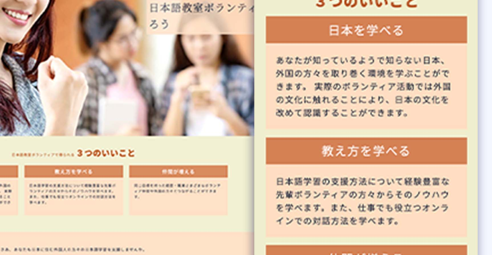

About
埼玉県を拠点とし、コミュニティ活動やノンフォーマル教育活動を支援するためのWeb・スマホアプリを開発しています。
デジタルなアプリでも、リアル要素で補うアナログさを大事にしたいと思っています。それは人と人とのつながりや体験といった要素です。
約１５年間勤務した非営利団体での経験や知見を活かし、関わる人たちのエネルギーが全てその思いに費やせるよう、使う人達の目線を大事にした使いやすさを追求します。
プログラマとしてはまだ未熟ではありますが、仕事をさせていただきながら腕を磨き、新しい技術を取り入れさせていただきたいと思っています。
このページに掲載しているサンプルで気になられること、私が携われることがあればぜひご連絡ください。
Works
ホームページ制作
- レスポンシブWebデザイン
- HTML/CSS/JavaScript コーディング
- Wordpressサイト立ち上げ、カスタマイズ
Webアプリ/スマホアプリ開発
- Ruby on Rails + MySQL(またはPostgreSQL)
- Vue.js + Firebase, GCP, 他API連携
顧客管理・データ分析
- Saleforce レポートおよびダッシュボード作成
- Google Data Portal を使ったデータビジュアライゼーション、外部データ連携
- Google Analytics での顧客分析
業務効率化支援
- Google Apps Script コーディング(Document, Spreadsheet, Calendar, Forms等連携 外部API連携も可)
- Slack連携
英語コミュニケーション支援
- 英会話、ビジネスメール通信
- 国際交流行事企画・コーディネート
- 国際会議コーディネート
Samples
団体内用学び共有サイト
- 参加者間で学びを共有し、「いいね」で称え合うことができます。これにより、 コミュニケーションを活発化し、学習者が課題を共有しやすい雰囲気を作ります。
- 学びの場の開催情報と出欠連絡を簡単に伝えあうことができます。

ボランティア募集サイト
- 欲しい人材ターゲットの記憶に残り、行動を促すサイト設計を行います。
Next..
小学生向け、観察力を鍛えるスマホゲーム
一日一つ人のためになるいいことをして記録するスマホアプリ
自分のいるマップ位置に印を残し、友達に同じ場所でその印を探してもらうスマホアプリ